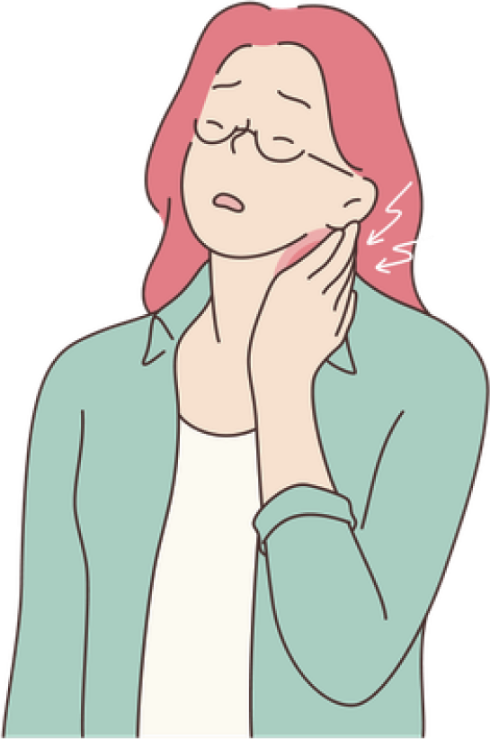

Registro Diário
Monitore seu nível de dor, qualidade do sono, humor e energia de forma simples e intuitiva.
Transforme dados do seu cotidiano em insights úteis para autocuidado e prevenção.
Criar uma contaFerramentas inteligentes para entender e gerenciar seus sintomas
Monitore seu nível de dor, qualidade do sono, humor e energia de forma simples e intuitiva.
Cruze seus sintomas com dados de temperatura, umidade e previsão de chuva para entender como o ambiente te afeta.
Receba análises inteligentes de padrões que ajudam a prever momentos de sensibilidade e possíveis gatilhos de crise.

Estamos constantemente inovando para oferecer a melhor experiência de autocuidado.
Em breve, integração com smartwatches para monitoramento contínuo e automático.
Inteligência artificial ainda mais precisa para prever e prevenir crises.
Recomendações específicas baseadas no seu padrão único de sintomas.
Baseado em padrões reais e dados do dia a dia — não em suposições.
Experimente